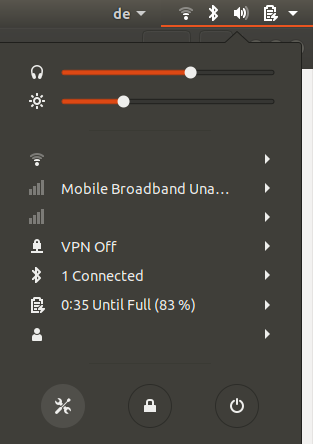
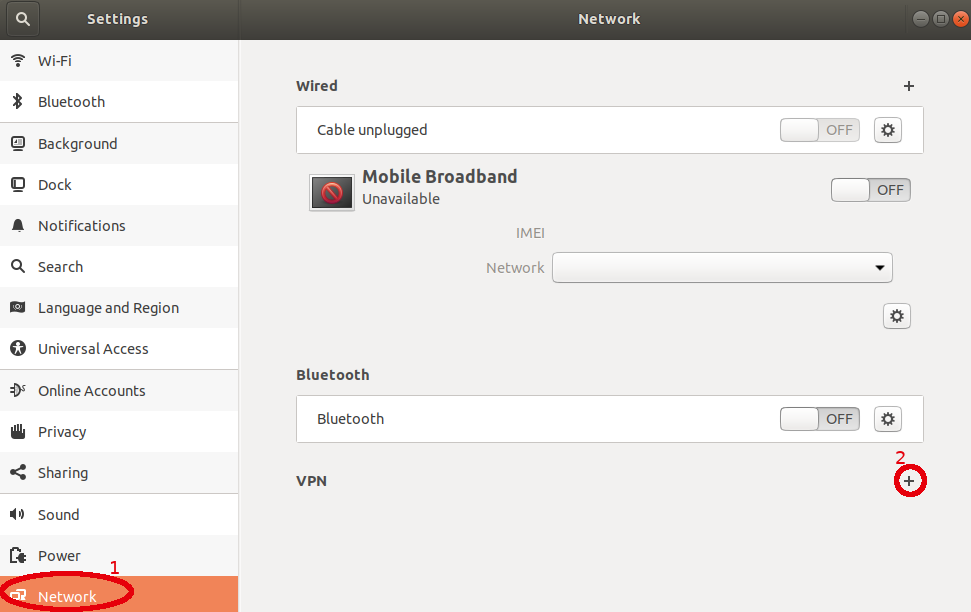
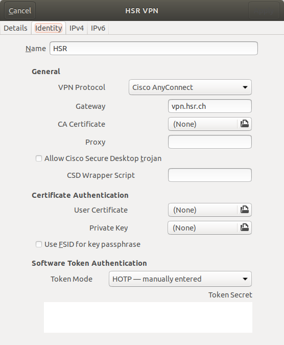
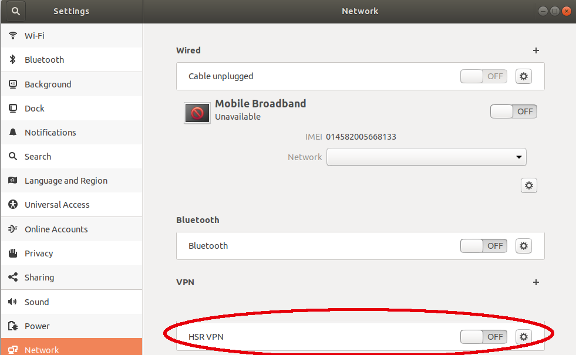
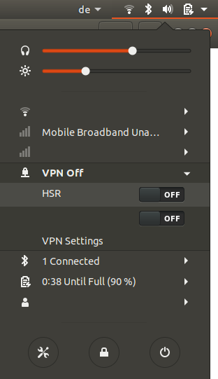
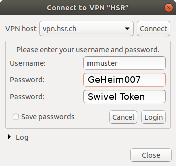
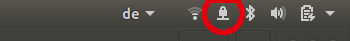

Technische Angaben
| Einstellung | Wert |
|---|---|
| Gateway | vpn.hsr.ch |
| Benutzername | mmuster |
| Benutzerpasswort | GeHeim007 |
Zusätzlich brauchst du die SwivelSecure App. Einen Link solltest du vom HSR Helpdesk erhalten haben.
VPN unter Ubuntu einrichten
Hinweis: Richte das VPN nicht im HSR-Secure-WLAN ein - aus dem HSR-Netz können keine VPN-Verbindungen hergestellt werden.
-
Benötigte Abhängigkeiten installieren
Bevor du loslegen kannst, musst du noch das Paketnetwork-manager-openconnect-gnomeinstallieren. Jetzt installieren -
Öffne die Netzwerkeinstellungen über den Netzwerkindikatoren am oberen rechten Bildschirmrand via dem
Werkzeug-Symbol+Netzwerkeinstellungen
 - Klick auf den Button + um eine neue VPN Konfiguration hinzuzufügen
 - Wähle in der Liste den Eintrag Cisco AnyConnect Compatible VPN (openconnect) aus

-
VPN Einstellungen eintragen - natürlich mit eigenem Benutzernamen & Passwort

Es sind keine erweiterten Einstellungen und Konfigurationen in anderen Tabs erforderlich. - Speichern mit Klick auf Speichern. Der neue Eintrag erscheint nun in der Liste
 -
Verbindung über den Netzwerkindikatoren am oberen rechten Bildschirmrand via
VPN+HSRherstellen
 - Einloggen mit Usernamen, Passwort und achtstelligem Swivel Token und Verbinden.
 Setze die Checkbox Save passwords nicht, da dadurch dein Account temporär gesperrt werden könnte
Setze die Checkbox Save passwords nicht, da dadurch dein Account temporär gesperrt werden könnte


{kind=link}
{kind=link}
{kind=link}
{kind=link}
{kind=link}
{kind=link}
{kind=link}
VPN unter macOS einrichten
1. OpenConnect mittels Homebrew installieren
brew update
brew install openconnect
Ältere Versionen von OS X (10.6 und älter) benötigen zusätzlich einen TUN/TAP-Treiber wie TunTap.
Weiterführende Informationen: OpenConnect VPN on Mac OS X (siehe Kommentare)
2. Verbindung öffnen
sudo openconnect vpn.hsr.ch
Beim ersten Promt den Benutzernamen, beim zweiten das Passwort und beim dritten den Code aus der Swivel-App eingeben.
VPN einrichten unter anderen Linux Distributionen
Arch Linux
Die Einrichtung via Netzwerk-Manager erfolgt analog zu Ubuntu. Als Abhängigkeit wird das Paket networkmanager-openconnect benötigt, welches sich im extra Repository befindet.
pacman -S networkmanager-openconnect